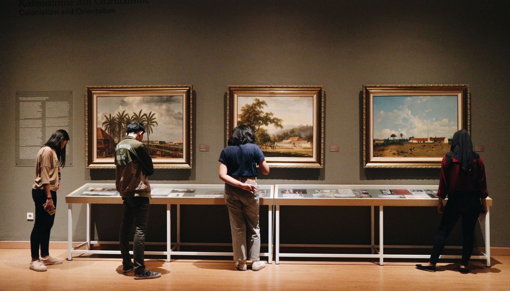
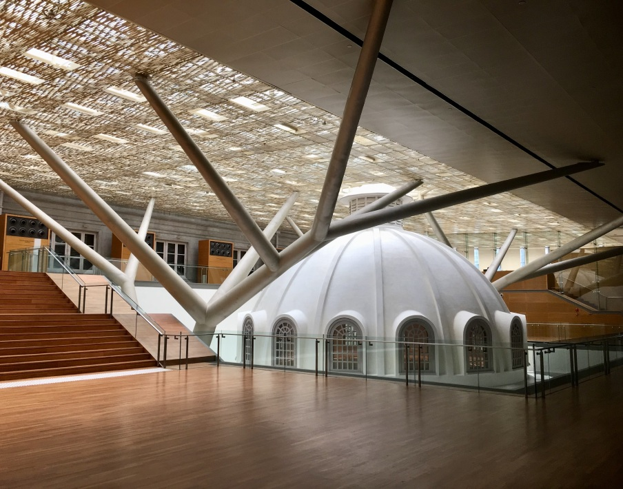
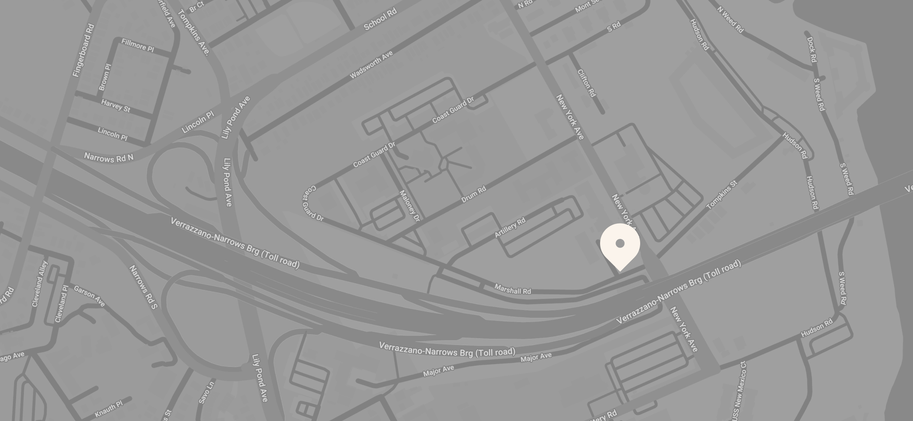

Contemporary art in a landmark timber hall — since 1941
Woodwave
Gallery


Main hall, east light
Timber vault, 1941
Contemporary art in a landmark timber hall — since 1941
Main hall, east light
Timber vault, 1941
About the gallery

Woodwave occupies a timber hall raised in 1941 and kept close to its original state. The grain of the walls, the curve of the vault, the slow movement of daylight — the architecture sets the terms, and the collection answers them.
Our storyInside the hall
1/6

Central nave
What we hold
We collect work that listens to its room. From the late twentieth century to the present day, the holdings favour pieces shaped by material, scale and place — art that stands differently here than anywhere else.
The collectionEight decades

The first works entered the hall the year it opened. Since then the collection has grown by patience rather than appetite — a few pieces each era, chosen for how they hold the room.
New wing, 2023

From the curator
Elin Marsh, curator since 2011, on hanging work in the timber hall. Every placement is tested against the light at three hours of the day before it stays.
Plan your visit

Stay in touch
One letter a season — new works, new hours, nothing else.